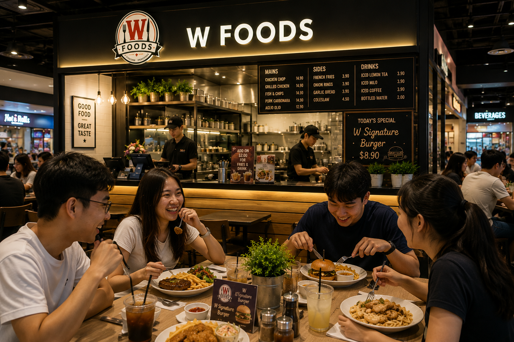
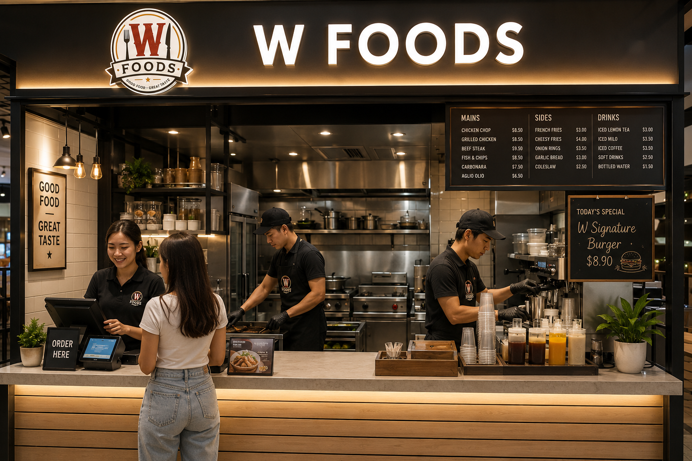

Vision
To become a trusted and well-loved Western food destination, known for serving high-quality meals, providing outstanding customer service, and creating a warm, welcoming dining experience for everyone.



